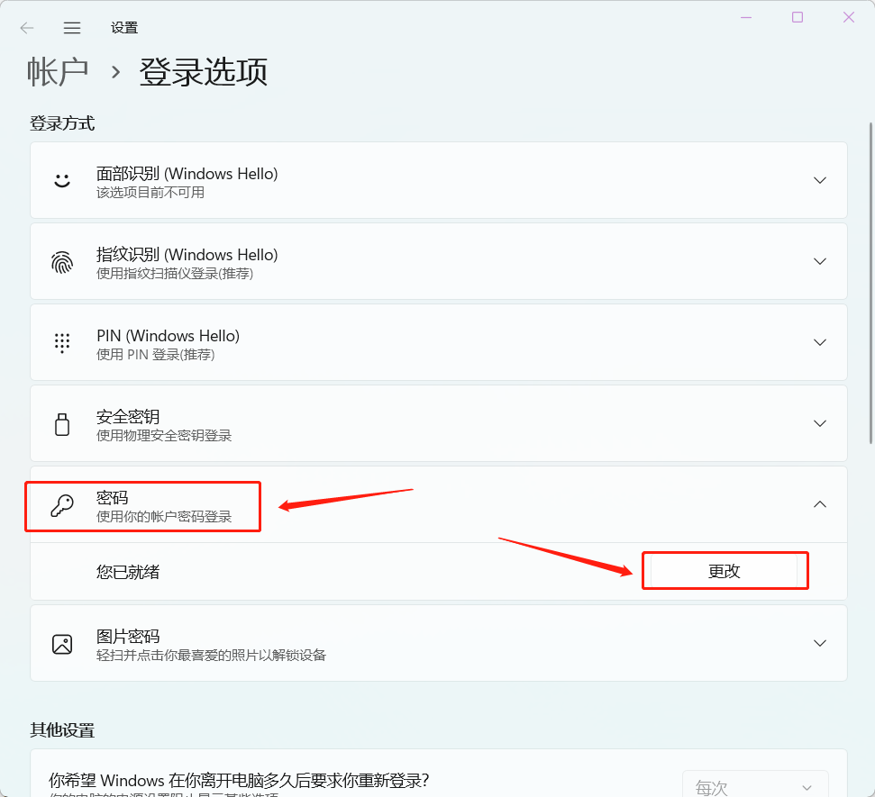

| 密码最长有效期 | 180天 后，登录时会提示更换新密码 |
| 密码长度要 | 不低于 8位 |
| 密码强度要求 | 英文大小写+数字（如：Yuanfudao123） |
| 1、在页面顶部点击“ 点我修改密码 ”: |
| 2、点击密码选项，点击更改： |
|  |
| 辅导老师 | ThinkPad + iPad + 手机 +配件+ (显示器有需要找IT领取) |
| 销售中心 | ThinkPad + iPad + 手机 +配件+ (显示器有需要找IT领取) +耳机 |
| HRBP | ThinkPad+手机+插线板 |
| 1、打开“ 私人手机上的企业微信 ”; |
| 2、在底部导航栏找到工作台，并在其中找到“ 门禁照片采集 ”; |
| 1、检查电脑连接的WiFi是否已连接上： RuZhiPeiXun |
| 2、同意条款并登录 |
| 3、选择右上角二维码折痕，使用 企微扫码登录 |
| 4、等待浏览器弹出窗口点击“ 打开CorpLink（飞连） ” |
| 5、登录成功后，选择员工WiFi，点击 一键连接 ,检查电脑连接的WiFi是否切换为：kanyun |
| 1、检查手机连接的WiFi是否已连接上： RuZhiPeiXun |
| 2、输入企业ID： kanyun |
| 3、同意条款并登录 |
| 4、选择右上角二维码折痕，使用 企微扫码登录 |
| 5、登录成功后，选择员工WiFi，点击 一键连接并给予相应权限 |
| 6、检查手机连接的WiFi是否切换为： kanyun |
| 1、成功登录后在右上角点击 小人 ; |
| 2、开始修改密码，默认密码在入职短信中，需要大小写加数字八位以上。 |
| 1、在顶部点击“ 点我去企业邮箱 ”; |
| 2、使用入职短信中的 默认邮箱账号和密码登录 ; |
| 3、点击 设置 、账户 、修改密码 ; |
| 4、使用 私人微信 扫码关注公众号。 |
| 1、打开手机企业微信; |
| 2、在底部导航栏找到 邮件 ; |
| 3、输入刚刚修改的企业邮箱密码; |
| 4、能看到邮箱内的邮件即绑定成功。 |
| 1、打开手机企业微信，在底部导航栏找到 工作台 ，找到资产系统 ; |
| 2、在资产系统中选择 领用待确认 ; |
| 3、认真细致检查发放的 主设备编码与系统是否一致 ，配件是否齐全 ，设备外观是否完整 ，确认后，勾选所有待确认资产 ，签字 ; |